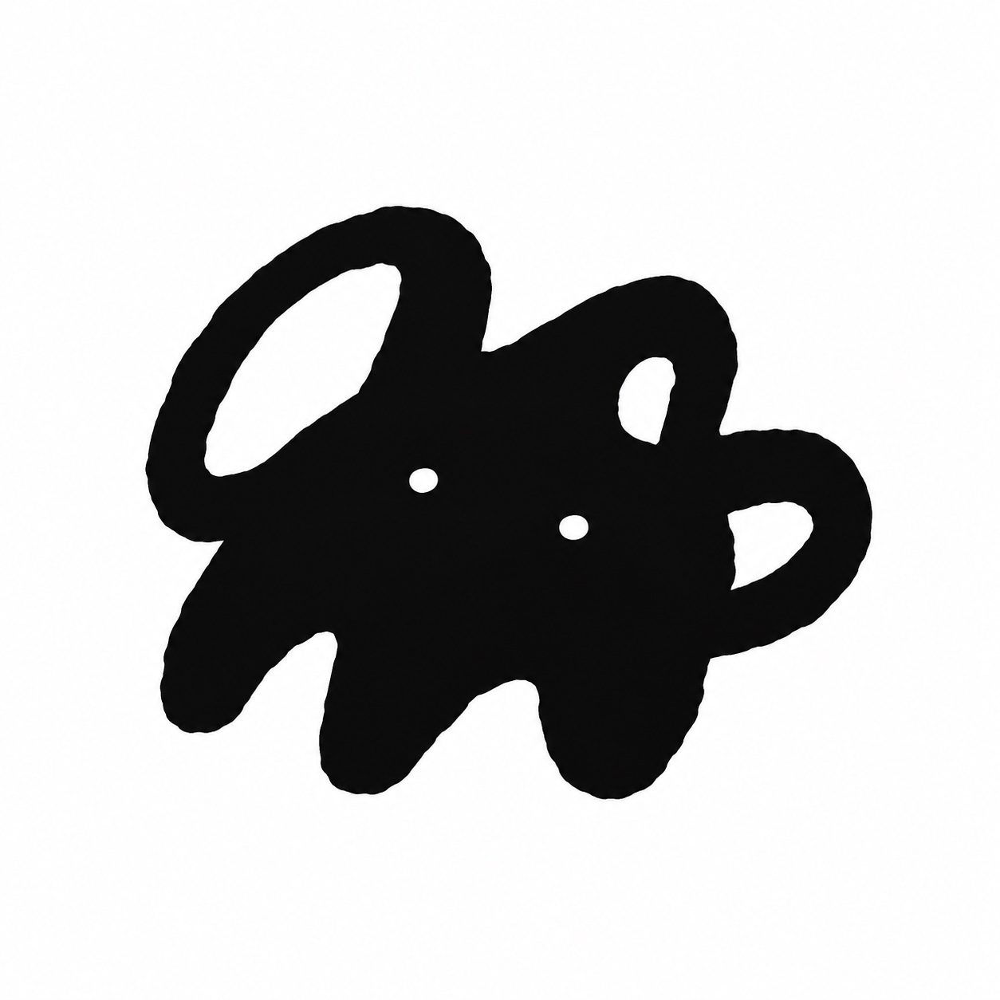

오늘 뭐 했어?
일단 찍어. 나머지는 여기서.
배율
이 순간, 담아둘까?
MY LITTLE VIDEO DIARY
0 CUTS · 0초모아둔 순간들.
아직 담은 순간이 없어요.
영상은 이 브라우저에만 보관돼요. 중요한 순간은 파일로 저장해 주세요.

qwervlog일단 찍어. 나머지는 여기서.
이 순간, 담아둘까?
아직 담은 순간이 없어요.
영상은 이 브라우저에만 보관돼요. 중요한 순간은 파일로 저장해 주세요.
카메라를 열거나 기존 영상을 가져오세요.